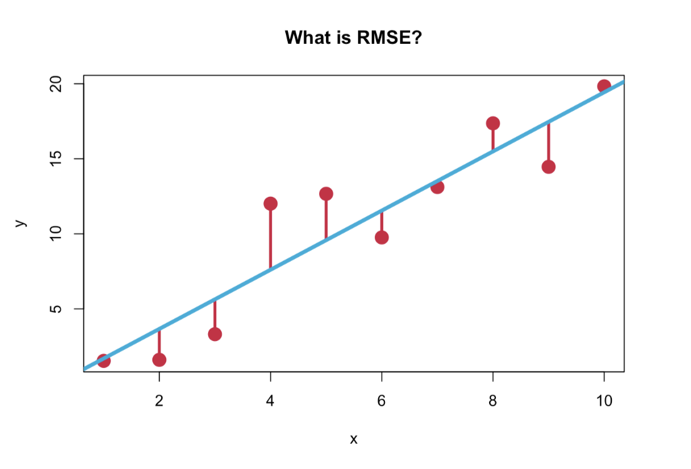
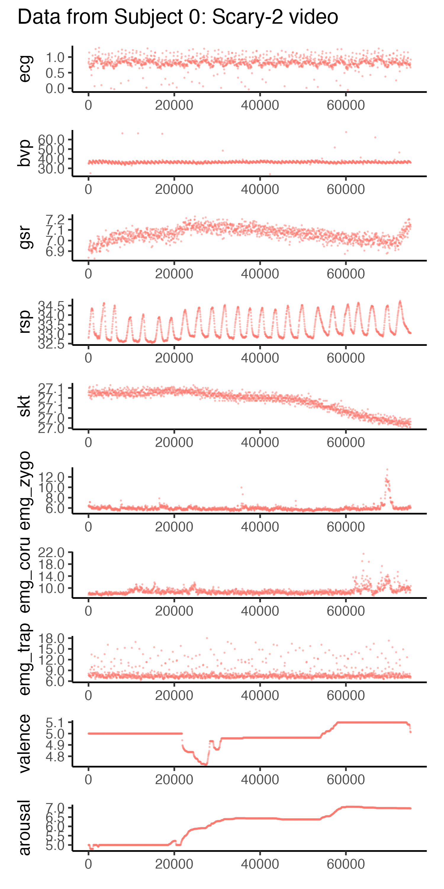
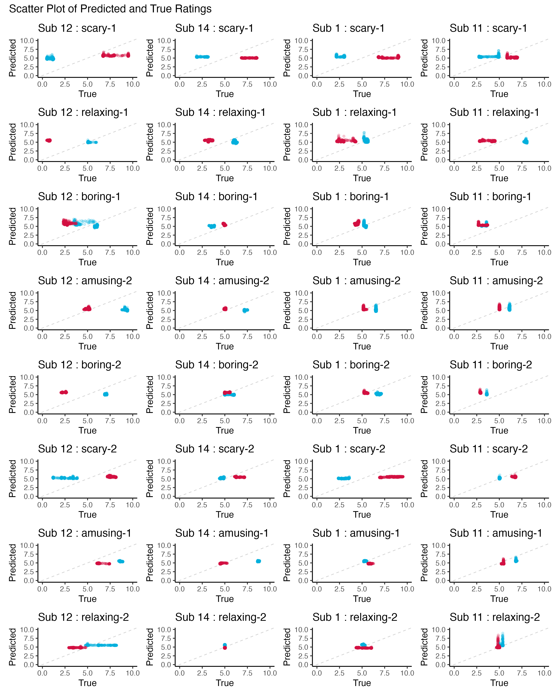
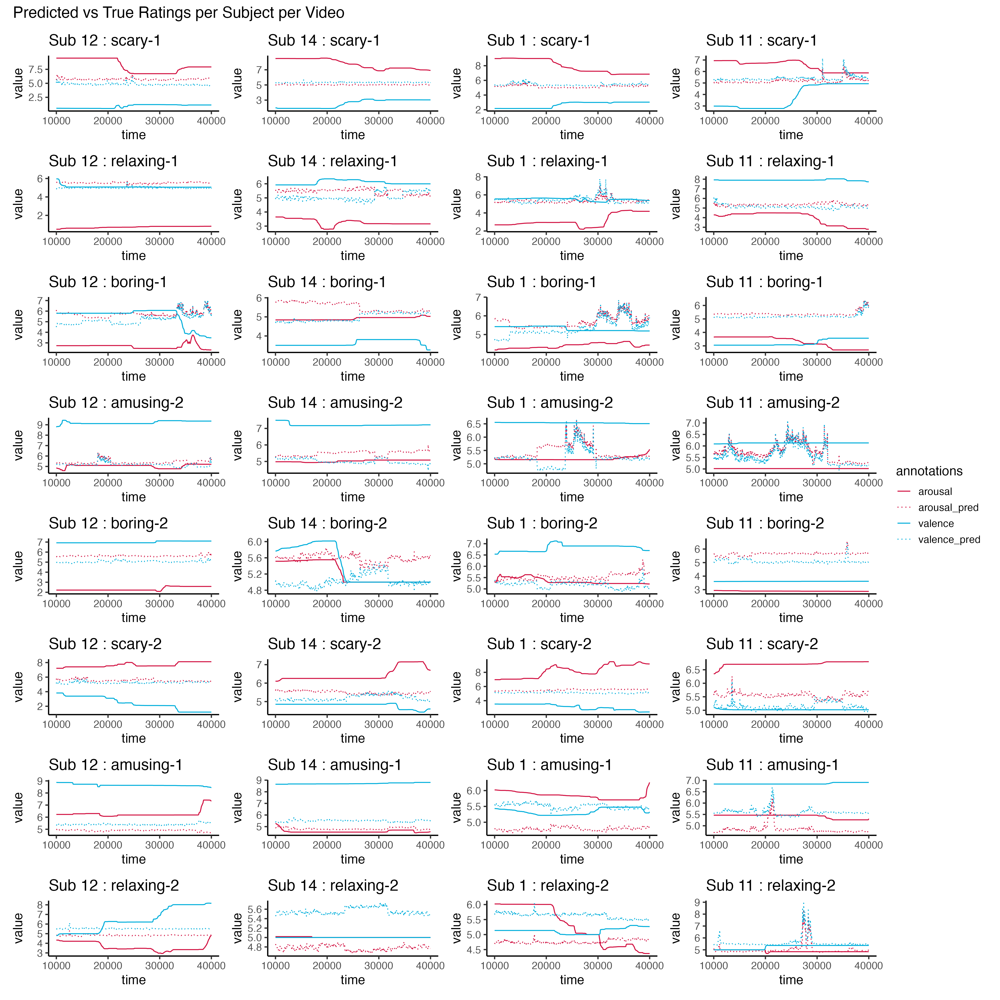

What does it mean to have an RMSE of 1.2? How wrong is it?
R
linear regression
Author
Jamie Chiu
Published
May 11, 2023
I recently participated in the “Emotion Physiology and Experience Collaboration (EPiC)” competition, which involved predicting 30-seconds worth of continuous self-reported valence and arousal ratings of participants given their physiological data. You could use any model and the evaluation metric was the root mean squared error (RMSE).
Like a good scientist, I started with browsing research and conference papers in the emotion prediction space to get a feel for what existing models were being used and how good they were at the task. One interesting thing that I saw was that the RMSEs reported in papers with complex neutral network models only slightly beat out our trusty old friend the linear regression model, with the “best fitting model” quoted as having an RMSE of 1.2. But what is RMSE anyway and what does an RMSE of 1.2 really mean?

In this post, I will use a subset of the EPiC dataset to demonstrate how to calculate RMSE and how to interpret it. We will use a training set to train a model and a test set to evaluate our predictions.
Load in data
The dataset that was used in the EPiC competition came from a public dataset called CASE, which stands for Continuously Annotated Signals of Emotion.
The original CASE dataset contained data from 30 participants. Each participant watched 8 videos that were chosen to elicit one of 4 emotional states (2 videos per emotional state), corresponding to different corners of the valence-arousal space: amusement (positive valence, high arousal), fear (negative valence, high arousal), boredom (negative valence, low arousal) and relaxation (positive valence, low arousal). Participants used a joystick to annotate valence and arousal in a 2D grid, which were collected at a rate of 20Hz (i.e. every 50ms). The dataset also included 8 physiological measures, each sampled at a rate of 1000Hz: electrocardiography (ECG), blood volume pulse (BVP), galvanic skin response (GSR), respiration (RSP), skin temperature (SKT) and electromyography (EMG) measuring the activity of three facial and back muscles.
For the purposes of this post, I subsetted a portion of the original dataset (and split it into train and test sets) and downsampled the physiological data to match the emotion ratings at every 50ms. I also exported it as a csv file and that is what we will be using here. (I hope you can appreciate that I had to do a lot of data cleaning and wrangling to get the data into this clean format! My biggest takeaway from participating in this competition was that 75% was data wrangling and preprocessing, 20% was waiting for your model to train, and 5% was actually building the model. lol just kidding… but not really.)
Code
# load in datalibrary(readr)train_dataset <-read_csv("https://jamie-chiu.github.io/Dear (Data) Diary/posts/001-RMSE/training_dataset.csv")test_dataset <-read_csv("https://jamie-chiu.github.io/Dear (Data) Diary/posts/001-RMSE/test_dataset.csv")
Explore the data
Let’s take a look at the training dataset.
Code
library(tidyverse)library(knitr)# display first few rowshead(train_dataset) %>%select(-fold) %>% knitr::kable()
subject
time
ecg
bvp
gsr
rsp
skt
emg_zygo
emg_coru
emg_trap
valence
arousal
video
0
0
1.004
36.758
6.183
32.895
25.232
5.933
7.986
7.615
5.000
5.000
scary-1
0
100
0.849
37.633
6.209
33.156
25.242
6.056
8.109
7.289
5.000
5.000
scary-1
0
1000
0.826
37.561
6.202
32.914
25.242
6.302
7.782
7.905
5.000
5.000
scary-1
0
10000
0.886
36.893
6.202
33.282
25.232
5.974
8.274
8.601
5.000
5.000
scary-1
0
100000
0.596
37.455
9.549
31.385
25.168
6.837
7.864
8.726
3.364
5.715
scary-1
0
100050
0.557
37.251
9.518
31.385
25.172
6.836
7.862
7.616
3.364
5.715
scary-1
How many train and test subjects do we have?
Code
# count number of subjectsunique(train_dataset$subject) %>%length() %>%paste0("Number of train subjects: ", .)
[1] "Number of train subjects: 8"
Code
unique(test_dataset$subject) %>%length() %>%paste0("Number of test subjects: ", .)
[1] "Number of test subjects: 4"
How many observations do we have for each subject?
Code
# count number of observations per subject per videotrain_dataset %>%group_by(video) %>%summarise(length = (n()/8)*0.05,obs =n()/8) %>% knitr::kable(# reorder columns col.names =c("Video", "Length of video (seconds)", "Number of observations"),caption ="Number of training observations per video",digits =0 )
Number of training observations per video
Video
Length of video (seconds)
Number of observations
amusing-1
161
3217
amusing-2
144
2873
boring-1
69
1376
boring-2
126
2516
relaxing-1
105
2104
relaxing-2
107
2149
scary-1
177
3531
scary-2
103
2067
Let’s take a look at one participant’s physiological measures and emotion annotations for a scary video.
Code
# plotting one participant's datalibrary(patchwork) # for arranging plots# define physiological measuresmeasures <-c("ecg", "bvp", "gsr", "rsp", "skt", "emg_zygo", "emg_coru", "emg_trap", "valence", "arousal")# create list to store plotsplots <-list()# iterate over measures and create plotsfor (measure in measures) { plot <- train_dataset %>%filter(subject ==0) %>%filter(video =="scary-2") %>%ggplot(aes(x=time, y=!!sym(measure), color=video)) +geom_point(size=0.2, alpha=0.2) +# remove legendtheme(legend.position="none") +# remove x-axis labelxlab(NULL) +# y-axis to have 2 decimal placesscale_y_continuous(labels = scales::number_format(accuracy =0.1))# add plot to list plots[[measure]] <- plot}# combine plots using patchwork::wrap_plotsall_plots <- patchwork::wrap_plots(plots, ncol =1, guides="auto") +plot_annotation(title ="Data from Subject 0: Scary-2 video")# save the plotsggsave("subject0-scaryvid.png", all_plots, width=5, height=10)

Hm, just by looking, it doesn’t seem like there is a very clear relationship between the physiological measures and the emotion annotations. Near the end of the video, you see a bit of a spike in the EMG recordings (muscles) and GSR (skin conductance), which probably corresponded to a jumpy part in the scary clip. But let’s see what the linear regression model says.
Linear regression model
We will be fitting a linear regression model with the lm() function. (I also have, in the code chunk below, written a mixed effects model using lmer where I specified a varying intercept for each video, if you want to play around with that. I decided to keep it simple for this post.)
More importantly, we will train the model using the training dataset, and then evaluate the model using the test dataset. We will generate predictions for the test dataset and then calculate the RMSE for each subject for valence and arousal.
The formula for the linear regression model is: y ~ ecg + bvp + gsr + rsp + skt + emg_zygo + emg_coru + emg_trap; where y = valence and y = arousal separately.
Let’s take a look at the model summary for arousal:
Code
library(jtools)# summary of arousal modelsumm(m.arousal, confint=TRUE, digits=3)
Observations
158663
Dependent variable
arousal
Type
OLS linear regression
F(8,158654)
1644.846
R²
0.077
Adj. R²
0.077
Est.
2.5%
97.5%
t val.
p
(Intercept)
3.054
2.851
3.256
29.537
0.000
ecg
0.034
0.014
0.053
3.428
0.001
bvp
0.025
0.020
0.030
9.677
0.000
gsr
0.034
0.034
0.035
95.250
0.000
rsp
-0.027
-0.029
-0.025
-30.051
0.000
skt
0.042
0.039
0.044
29.915
0.000
emg_zygo
0.033
0.032
0.035
44.221
0.000
emg_coru
0.013
0.012
0.014
30.656
0.000
emg_trap
0.004
0.003
0.004
21.663
0.000
Standard errors: OLS
And here’s the summary for valence:
Code
# summary of valence modelsumm(m.valence, confint=TRUE, digits=3)
Observations
158663
Dependent variable
valence
Type
OLS linear regression
F(8,158654)
1881.978
R²
0.087
Adj. R²
0.087
Est.
2.5%
97.5%
t val.
p
(Intercept)
7.832
7.614
8.050
70.367
0.000
ecg
-0.030
-0.051
-0.009
-2.839
0.005
bvp
-0.025
-0.030
-0.020
-9.092
0.000
gsr
-0.034
-0.035
-0.033
-86.972
0.000
rsp
-0.015
-0.017
-0.013
-15.267
0.000
skt
-0.022
-0.025
-0.019
-14.640
0.000
emg_zygo
0.045
0.043
0.046
55.045
0.000
emg_coru
-0.023
-0.024
-0.023
-50.376
0.000
emg_trap
0.006
0.006
0.007
35.300
0.000
Standard errors: OLS
Great! We have our models. The \(R^2\) suggests that <10% of the variance is explained by our models, even though all the variables are statistically significant. (When I played around with the mixed effects model with varying intercepts for each video, the variance explained went up to ~60%). Anyways, let’s generate predictions for the test dataset!
Computing the RMSE
We will use the predict() function to generate predictions for the test dataset for each subject and each video. We will then calculate the mean RMSE for valence and arousal, averaged across all subjects.
Code
# subset test dataset into X_test and y_trueX_test <- test_dataset %>%select(-fold, -valence, -arousal)y_true <- test_dataset %>%select(subject, video, time, valence, arousal)# use models to predict arousal and valence using test input# initialise countercounter <-0rmse_values_arousal <-list()rmse_values_valence <-list()test_pred_arousal <-list()test_pred_valence <-list()for (sub inunique(X_test$subject)) {for (vid inunique(X_test$video)) {# add to counter counter <- counter +1# subset the data df <-subset(X_test, subject == sub & video == vid)# subset the true y data df_true_y <-subset(y_true, subject == sub & video == vid)# predict arousal pred_arousal <-predict(m.arousal, newdata = df)# predict valence pred_valence <-predict(m.valence, newdata = df)# calculate RMSE rmse_arousal <-sqrt(mean((y_true$arousal - pred_arousal)^2)) rmse_valence <-sqrt(mean((y_true$valence - pred_valence)^2))# store RMSE values rmse_values_arousal[[counter]] <- rmse_arousal rmse_values_valence[[counter]] <- rmse_valence# store predictions test_pred_arousal[[counter]] <- pred_arousal test_pred_valence[[counter]] <- pred_valence }}average_rmse_arousal <-mean(unlist(rmse_values_arousal))average_rmse_valence <-mean(unlist(rmse_values_valence))# print average RMSE values paste("Average RMSE Arousal:", round(average_rmse_arousal, 3),"Average RMSE Valence:", round(average_rmse_valence, 3), collapse ="\n")
[1] "Average RMSE Arousal: 1.881 Average RMSE Valence: 2.001"
We got our RMSE values using this equation: sqrt(mean((y_true - y_pred)^2)). That is, we take the difference between the true value and the predicted value, square it, take the mean, and then take the square root. RMSE is the standard deviation of the residuals, and it tells us how far the true values are from our fitted regression line.
So what exactly does the RMSE score tell us? How “wrong” is our model? Is it wrong in many small ways or a few large ways? By squaring errors and calculating a mean, the RMSE penalises large errors.
Going back to my intro – where I said there were studies quoting an RMSE of 1.2 as “the best fitting model” – let’s see what our model of RMSE 1.8 actually looks like in terms of how well it really fits.
Let’s plot the predicted valence and arousal ratings against the true ratings for each of our 8 participants per video. First, we’ll use scatter plots to see how well our predicted correlates with true ratings.
Code
# convert lists to data framesdf_pred <-data.frame(valence_pred =unlist(test_pred_valence), arousal_pred =unlist(test_pred_arousal) )y_hat_y_true <-cbind(df_pred, y_true)
Code
# initialise empty list for storing plotsplots <-list()# initialise countersub_i <-0# loop through subjectsfor (sub inunique(y_hat_y_true$subject)) {# add to counter sub_i <- sub_i +1# initialise empty list for storing subject plots subplots <-list()# loop through videos (for each subject)for(vid inunique(y_hat_y_true$video)){# subset data subset <- y_hat_y_true %>%filter(subject == sub & video == vid)# create scatter plot + add to list subplots[[vid]] <- subset %>%ggplot(aes(x=valence, y=valence_pred)) +geom_abline(slope=1, intercept=0, linetype="dashed", color="lightgrey") +geom_jitter(width=0.05, height=0.05, color="#00aedb", alpha=0.2) +geom_jitter(aes(x=arousal, y=arousal_pred), width=0.05, height=0.05, color="#d11141", alpha=0.2) +ggtitle(paste0("Sub ", sub, " : ", vid)) +labs(x="True", y="Predicted") +xlim(0,10) +ylim(0,10) }# arrange subject's plots in a column plots[[sub_i]] <- patchwork::wrap_plots(subplots, ncol=1)}# arrange all subjects' plots in a gridp <- patchwork::wrap_plots(plots, ncol=4) +# add titleplot_annotation(title ="Scatter Plot of Predicted and True Ratings")# save plotggsave("pred_cor.png", p, width=12, height=15)

Next, we’ll look at how well our predicted ratings look against the true ratings over time.
Code
# initialise empty list for storing plotsplots <-list()# initialise countersub_i <-0# loop through subjectsfor (sub inunique(y_hat_y_true$subject)) {# add to counter sub_i <- sub_i +1# initialise empty list for storing subject plots subplots <-list()# loop through videos (for each subject)for(vid inunique(y_hat_y_true$video)){# subset data subset <- y_hat_y_true %>%filter(subject == sub & video == vid) %>%pivot_longer(cols=c(valence, valence_pred, arousal, arousal_pred), names_to="annotations", values_to="value") %>%mutate(annotations =factor(annotations))# create line plot + add to list subplots[[vid]] <- subset %>%ggplot(aes(x=time, y=value, color=annotations)) +geom_line(aes(linetype=annotations, color=annotations)) +scale_linetype_manual(values=c("solid", "dotted", "solid", "dotted"))+scale_color_manual(values=c("#d11141", "#d11141", "#00aedb", "#00aedb")) +ggtitle(paste0("Sub ", sub, " : ", vid)) +theme(legend.position="right") }# arrange subject's plots in a column plots[[sub_i]] <- patchwork::wrap_plots(subplots, ncol=1)}# arrange all subjects' plots in a gridp <- patchwork::wrap_plots(plots, ncol=4, guides="collect") +# add titleplot_annotation(title ="Predicted vs True Ratings per Subject per Video")# save plotggsave("pred_v_true.png", p, width=15, height=15)

So, what do you think? Our RMSE for arousal was 1.8, which means that on average, our model was off by 1.8 points. But once we plotted it against the real values (especially over time), we see that our model is actually pretty awful. However, when the dataset gets large and the model gets more complex, it can be difficult to plot and visualise the model. In many ML applications, we often only ever look at one accuracy metric to determine whether a model is good at the task.
Conclusion
While it is important to quantitatively have metrics to measure how well our models are doing, it is still extremely important to look at the data and predictions qualitatively. Even though, for every observation, our model might only be wrong an average of 1.2 units (in the case of the RMSE = 1.2 model), if we string all these together to make hundreds of consecutive predictions, our model can be very wrong while still having a relatively “good” fit on average. So don’t be fooled by statistics and averages! And just because a model is termed “winning model” doesn’t mean it’s actually a good model, it just means the other models were worse.
Acknowledgements
Special thanks to the EPiC organisers for putting together such a fun competition, and to the CASE researchers who collected and made this dataset available. And thanks to Jason Geller for introducing me to Quarto blogs.